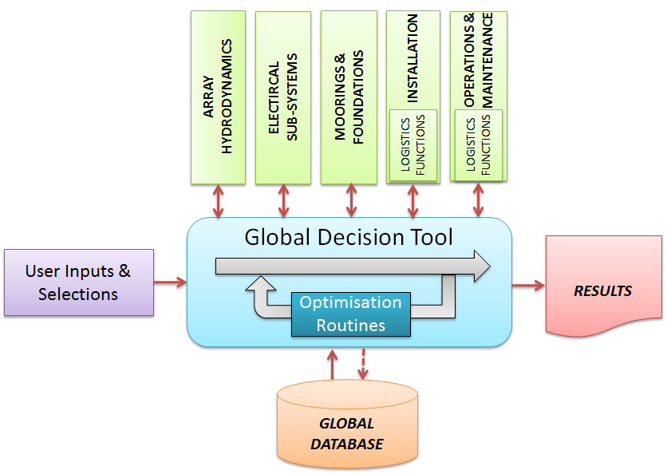
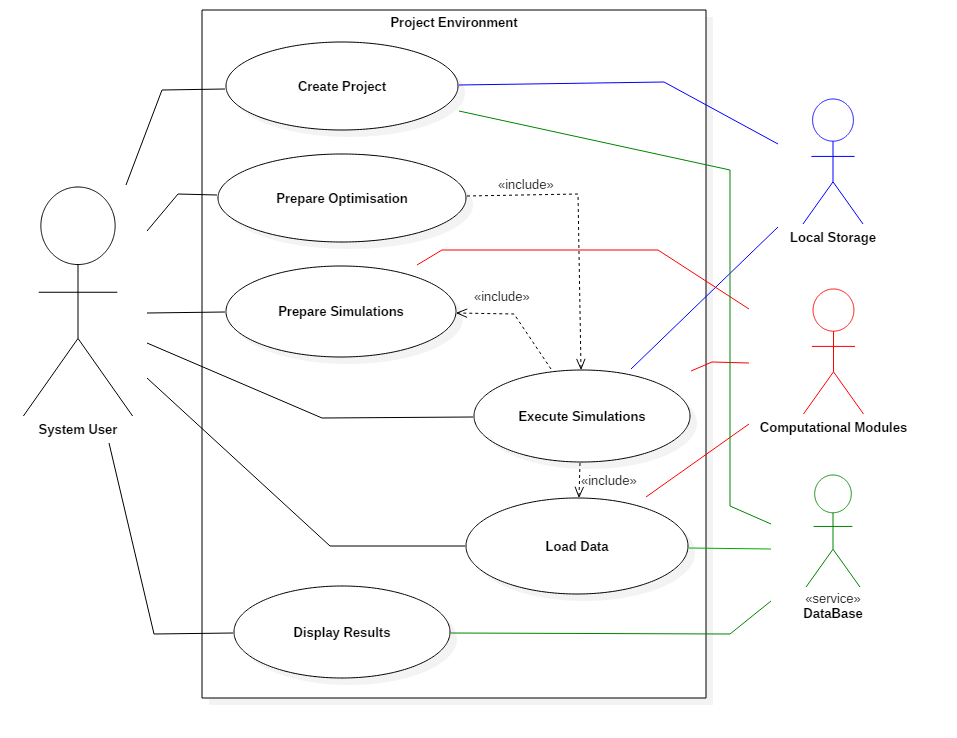
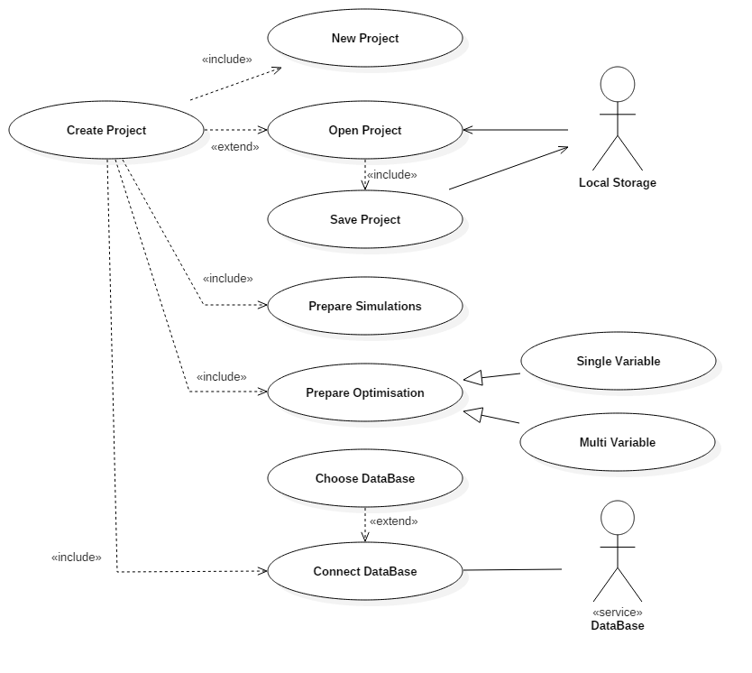
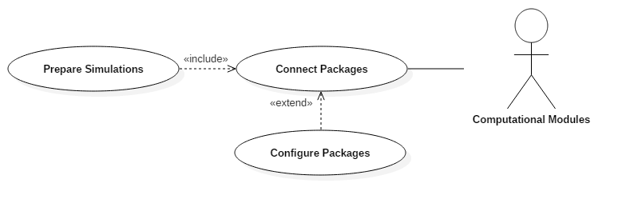
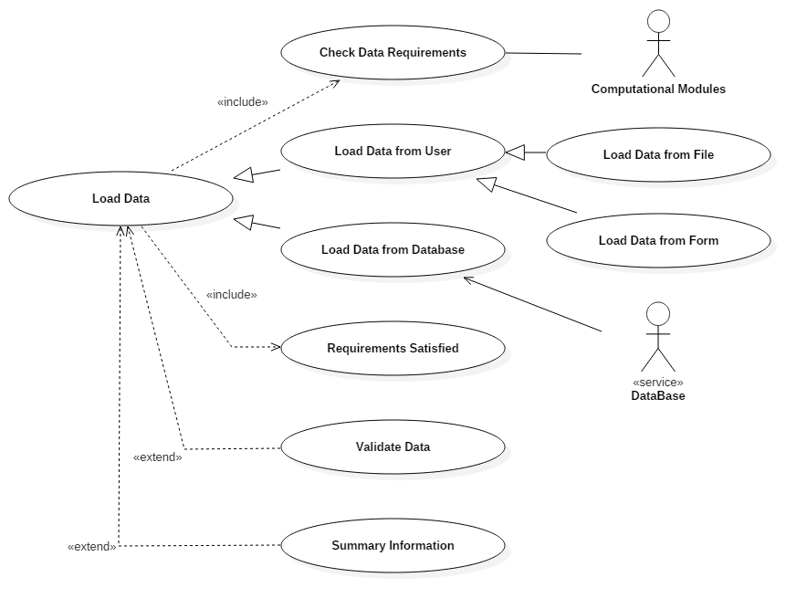
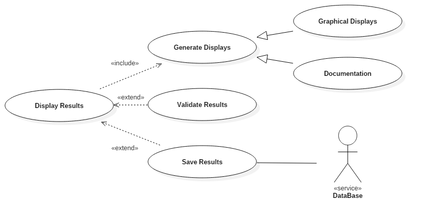

3. Requirements for Implementing the Design Tools
3.1. Primary Design Requirements
The following design requirements for the suite of design tools (from herein referred to as “the software”) guided the development of the software, and provided a high-level set of needs:
A standalone application is required for designing an array of ocean energy converters;
That is easy to understand;
And suited to continuous edition.
The whole architecture is to be modular;
And must be flexible in order to allow introduction of additional data or information.
The core of the software will be written in Python;
And will have a Graphical User Interface (GUI).
The tools developed for the design stages will be provided by the introduction of external functions;
And the potential for coupling with other software of common use for more sophisticated analysis should be provided.
The following sections translate the requirements listed above into a formal software design.
This design can be divided as follows:
Requirements from the end-user’s perspective, such as expected interactions and their result
Requirements for the software design
Each group of requirements is discussed in the following sections. The first section provides a set of high level design requirements. The second considers the technical needs to deliver those high level requirements and, thus, is more detailed.
3.2. End-User Requirements
3.2.1. Functional Structure and Definitions

Fig. 3.1 Functional Structure
Fig. 3.1 illustrates the modular nature of the software and the functionality of each component, in terms of the user-orientated experience. It consists of five main components:
User inputs & selections (purple)
A global database (orange)
A set of computational modules (green)
The global decision tool (blue)
Results (red)
Each of these are described in the following sections.
User Inputs & Selections
This component refers to any data that the user may be required to enter into the system (for the functionality of the computational modules) that cannot be retrieved from the global database, or where the user wishes to override the values stored within the global database.
The user will be required to select some high level parameters in order to filter the data collected from the global database for a specific scenario, i.e. the choice of technology and development site. The filtering of the input data will restrict the range of possible solutions from the software.
The user will also be able to configure the computational modules and the global decision tool and select which modules they wish to use and whether to carry out some sensitivity or optimisation analysis for the global system.
Global Database
The global database is the amalgamation of all data that is required for the operation of the computational modules that do not constitute design decisions In some cases several values may be available for the same parameter and thus the database will be required to filter those, for instance by technology or site, as discussed above. In other cases, it may be desirable to allow the appropriate modules to make a design based decision using a wide range of options.
Note that the database information is loaded into the global decision tool and not to the computational modules directly. This allows the user to override the data collected from the global database, reduces inefficiencies that can occur when several modules require the same data and removes ambiguities where some data that has originated from the database has been modified by one or more of the computational modules.
Specifically, the global database is to provide only inputs to the system. It will not to store intermediate solutions generated while calculating the final results or the final results themselves.
Computational Modules
The computational modules refer to components designed to solve a particular physical problem and create new output data. This is beyond simple manipulation of existing data within the system. The primary functionalities for the computational modules within the DTOcean software are:
Array Hydrodynamics: will find the optimum number of OEC devices and array layout in terms of maximising power generation and minimising losses caused by device interactions
Electrical Sub-Systems: will optimise the cost, conversion performance and infrastructure of the electrical connections required to facilitate the chosen layout of OEC devices
Moorings and Foundations: will optimise the cost and produce designs for the moorings and foundations of the chosen layout of OEC devices and electrical infrastructure
Installation: will optimise the cost of installation of all components chosen by the previous computational stages
Operations & Maintenance: will optimise the operations and maintenance requirements for the components selected in the previous modules, in terms of achieving the lowest cost of energy over the lifetime of the project
Logistics Functions: Although not an isolated module, these functions will optimise the cost of equipment and vessels for any required operations and produce the time requirements to perform them. These are used by the installation and operations and maintenance modules and are embedded within them
Although the main focus of the computational modules is to optimise the cost of energy, they are also required to produce data related to reliability and environmental impacts in order to facilitate a global assessment of these design metrics.
Further outcomes will include design information for the optimised array. This will be particularly useful for assessing the feasibility of the designs produced by the software.
Global Decision Tool
The global decision tool has a number of requirements to fulfil. Firstly, it must acquire input data from the user and the database (based on selections made by the user) for the computational modules. It must then deliver that data to the computational modules and collect results from them. These results may then become inputs to other computational modules.
The global decision tool is responsible for amalgamating the results from all the computational modules in order to assess the chosen global design metrics, which are:
LCOE (and other economic indicators)
Reliability assessment metrics
Environmental assessment metrics
The global decision tool must also allow optimisation of the global system (encompassing all modules) to seek better solutions for the design metrics, particularly LCOE. This can be achieved with various levels of complexity from sensitivity analysis on single variables, to automated multi-variable analysis.
A graphical user interface within the software will provide the user with the means to input data, configure the computational modules and database, execute simulations, visualise results and create reports.
Results
Various outputs will be provided by the DTOcean software, the most important of which are the global assessment metrics. Nonetheless, other results will be produced that will make the final assessments more transparent, help evaluate the feasibility of solutions and also aid the designer. These results include intermediate values produced by the modules (i.e. passed to the other modules), data relating to the calculation of the assessment metrics and other information relating to the design decisions made within each computational module (such as physical layouts, the bill of materials, vessel selection and O&M strategies).
This level of visibility will allow the user to investigate the key parameters that have contributed to the final design metric values and to confirm that the decisions made by the global decision tool are sensible and appropriate. Some of these outputs may also be useful for advancing concepts to a more detailed design stage, beyond the scope of the present software.
3.2.2. Use-Cases
Use-case diagrams describe the functionality of a software program (at various levels of detail) and the relationship of these functions to any “actors” that interact with the software.
Four actors have been identified within the use cases for DTOcean:
The system user
The computational modules
The database service
Local storage
The computational modules and the database service are considered actors as they are provided by external suppliers (i.e. developed separately) and may be updated or swapped, as per the maintenance and legacy requirements of the system. Local storage refers to on-disk storage to the device where the software is installed and which is persistent when the software is inactive.
The following diagrams are UML2 standard use-case diagrams. The top level use-case and five sub use-cases are described in the following sections.
Top Level Use-Case

Fig. 3.2 Top level use-case
For this primary use-case, seen in Fig. 3.2, a system user initiates the system by creating a new project or loading a pre-existing one. They may then create various different simulations or automatically optimised simulations within the project which must be prepared before execution (by selecting project information and modules for instance). Variables are then loaded into the simulations from the user or from a SQL database service. Once the variables are loaded the simulation can be executed and the variables passed to the computational modules. When the computational modules have completed the results will be returned to be displayed to the user. The five use-cases below expand upon this high level functionality.
Creating a Project

Fig. 3.3 Creating project use-case
When preparing a project, as seen in Fig. 3.3, the user can always create a new empty project. This functionality was extended so that the user is able to load a project from local storage, in which case the user can save the current project. Note that a project may contain several simulations.
Once a project is open, it is necessary to configure the database service. Certain user inputs are required for the database to provide data sets relevant to the current simulation scope. The database will reside on the same machine as the DTOcean software. Data can also be retrieved from other DTOcean databases (on a remote network location, for instance) by changing the database address, although the database may not be accessed by a multiple users at one time.
Preparing Simulations
The system user can now choose which computational modules they wish to connect to as seen in Fig. 3.4. For a full simulation, all of the modules described above are required; however, the user may wish to only examine the results of a single computational module or begin a simulation using data generated by an external (commercial or otherwise) tool.

Fig. 3.4 Preparing simulations use-case
Preparing Strategies
The user has the option to select different optimisation learning strategies such as single variable sensitivity analysis or more complex optimisation schemes.

Fig. 3.5 Data loading use-case
Loading Data
Once a simulation has been prepared, the software will run a check for the data required to complete the simulation and the possible sources where this data can be retrieved from (for instance, other modules or the user). This process is shown in Fig. 3.5. Prior to commencing a simulation the system will check if these requirements have been satisfied.
The user is required to load the data into the simulation environment. This can either be done manually or from the database service if the data is present there. Once the data has been acquired it may be necessary to validate the data, and this could be a future extension to the system.
A further extension could provide some summary information on the data that has been acquired. This will most likely take the form of statistical information.
Executing Simulations
Fig. 3.6 Executing simulation use-case
Before executing a simulation the user has the option to carry out the complete simulation or just a single stage and examine the intermediate results, as illustrated in Fig. 3.6.
An extension of this functionality could allow the recovery of a simulation from an intermediate stage (possibly the last one reached) that has been stored locally.
Following the completion of a simulation the results could be validated against some pre-defined ranges in order to assess the stability of the computation. This could be another future extension of the design.
Displaying Results

Fig. 3.7 Displaying results use-case
After the simulation has been completed, the user can choose different forms to display the results (depending on the need), which fall into two main categories: graphic or text display as seen in Fig. 3.7. The system allows the results to be saved as files and a future extension may allow results to be saved back to the database service.
It is possible to compare the results of data through different stages, e.g., to facilitate the optimisation of a parameter. Another future extension could allow automatic comparison of the final results against some pre-determined validation data.
3.3. Software Design Requirements
3.3.1. Key Concepts
Within the DTOcean design there are some key concepts and terms that require clarification before continuing. These concepts include the definition and storage of data, the communications between various actors such as the system user, database or computational modules and the logical collection of results into simulations and projects.
Data Definitions, Members and States
The data definitions are a key component of the DTOcean software and describe a unique set of metadata for which all data communication between components must conform. The minimum requirement to create a definition is simply a unique identifier, a label and a predefined structure that the data should conform to (such as a single variable or a matrix, for instance). These definitions can also be used to specify units and types, detailed descriptions of the data, the data´s location in the database, and potentially also information regarding validating the values associated to such definitions. Specifying all this information in a metadata format makes the system highly configurable and flexible.
A data member refers to actual recorded data that has been collected from some source and matched to a data definition. This data member contains both the metadata defined in the definitions and the data value stored within the structure specified.
A data state is a collection of data members. A data state can contain as many data members as required. By using many data states a record of how and when data members were collected or changed can be created. Finding the relevant state would allow the user to return to a previous stage of computation and examine or modify the data members.
Interfaces and Pipelines
An interface is used to convert the stored data members into the necessary data formats required to execute a computational module or to convert the data provided by the user, database or an executed module to the necessary formats required to store the data member. The interfaces also explicitly describe which data members are required or returned by a computational module, allowing the system to determine if all the data needed for a simulation can be obtained and from which actors.
A pipeline is a collection of sequential interfaces that follows an order, such as is required for executing the computational modules in DTOcean. Once the ordering is established the pipelines can determine when a data member will be provided by a computational module and whether that member would overwrite any inputs provided by other actors such as the user or the database. Like data states, pipelines can also be moved back to a particular stage in order to allow the system user (or optimisation learning strategy) to re-execute modules using modified data members as inputs.
Simulations and Projects
A simulation describes the execution of all or a subset of the modules as chosen by the user and the data required for and generated by those modules. The outputs of a simulation will always be consistent with the given input data although it will be possible to modify this data and re-compute a simulation from a previous stage (should multiple modules have been executed).
A project may contain one or more simulations. This allows the user the option to “clone” a simulation at a particular stage, modify the data in the cloned simulation and then compare the results of the two simulations once both are complete.
Learning Strategies
The multiple simulation functionality expands to the implementation of learning and optimisation strategies within the system. Many simulations can be cloned and executed in order to carry out a group of simulations for a sensitivity study or potentially search for and approach an optimised solution. These strategies should be amendable and updatable to allow the user to define their own strategies should they wish.
3.3.2. Programmatic Structure and Definitions
The programmatic structure describes the key computational components of the system, necessary to deliver the requirements defined in Section 2.2. Some of these components are directly accessible to the user; however, other components are not exposed to the system user at all. These components are shown in Fig. 3.8 and the definitions are as follows:
Core: The central, interconnecting part of DTOcean. This component acts as a multi-use interface connecting and ordering the computational modules, database, and other components that operate on the data described in the catalogue
Data Catalogue: The programmatic description of all the data that is allowed to be stored within the core. This is created from the data definition specification (DDS) which must meet a specified format.
Computational Modules: A computational component that is interfaced to the core. It takes inputs from the core to generate results which are then returned as outputs
Thematic Algorithms: A computational component that creates integrated metrics to evaluate the outcomes of a single computational module and groups of modules executed which form a simulation
Data Tools: A set of tools that can manipulate data within the core in order to modify existing data or create new data
Strategy Manager: This component controls the configuration and sequencing of advanced execution of the computational modules. This component will be capable of executing different learning strategies as required by the user
Database: A relational database containing a subset of the input requirements for the computational modules and can be filtered for specific simulation requirements
Graphical User Interface (GUI): An interface for the user of the software to specify which computational modules to use, configure them, load data and execute learning strategies. The interface will also be used to collect a subset of the computational module inputs (if not available in the database) and to display the outputs both of the modules and the thematic algorithms. Note, access to the database and data tools (other than the thematic algorithms) through the GUI is considered as an extension of functionality and is not included at this stage.
Fig. 3.8 Programmatic structure. Solid lines indicated included connectivity; the dashed lines indicate connections which relate to extended features.
Detailed descriptions of the abovementioned components are given in the following subsections.
Core
The core is a multi-client data coupling agent (with a hexagon like architecture) that will facilitate data environments without semantic conflicts and flexible connections between various computational modules and data tools within the DTOcean project. A key purpose of the core will be to ensure that the data requirements of each module can be fulfilled and that a single set of normalised variables are used (internally) so that there are no semantic conflicts between modules. Additionally the core will manage multiple simulations and data states, in order to understand the evolution of output variables throughout a simulation and compare the results between simulations with different input values.
The core is designed to provide the required data to execute a connected component and then retrieve any data returned by it using an interface to manage the exchange. The design of the core implies that the components connected to the core are “data coupled”, that is they are only connected by the data passing between them. This structure facilitates the development of modules as they are not reliant on the functions of other modules, just their outputs. Note that, although the connections to the core alone create a data-coupled system, other components in DTOcean increase the level of coupling of the system, as will be discussed later.
The core can execute computational modules in a particular sequence (by using pipelines) but it is only seeking to complete the execution of the chosen components. The user or the strategy manager component are responsible for making decisions regarding improving the outcome of a simulation by changing input data and re-executing certain components as required.
The core could be extended to include a degree of resilience to failure, by storing its data within local storage at intermediate stages, and thus, allow recovery of simulations. This is an extension of the ability to save and load projects. Other possible future extension include utilising tools such as “Asynchronous Component based Event Application Frameworks” which could allow both good fault resistance and an ability to operate many requests in parallel; it may reduce the time required for the optimisation module.
Data Catalogue
The primary purpose of the data catalogue is to describe all the data that can be contained within the core and ensure that there are no semantic conflicts between the various components interfacing with the core. Each record within the data catalogue will contain at minimum a unique identifier, a label for the data, and the data structure in which the data should be stored. Although many structures are provided with the DTOcean core, they may also be extended if a data member should have unique requirements, not met by the standard definitions.
The data catalogue can contain more detailed information about the data in question, including further descriptive data (such as its units) and technical information such as the location of the data within the database. These fields are read directly from the data description specification which must conform to a limited set of fields.
Computational Modules
The computational modules refer to any computational object that can generate new data from data described in the data catalogue, using complex logic. Note, as specified by the description of work, this need not be a module developed as part of the DTOcean project; it could be an externally developed tool that can create analogous data members. Thus a flexible interface is required for data to be provided to or collected from such computational modules.
Thematic Algorithms
The thematic algorithms have the specific purpose of generating the global metrics required for the design assessment of the marine energy installation.
Generally, all input requirements for the possible thematic assessments should be provided by the computational modules. In this way, particular thematic algorithms can be triggered if the appropriate data is available, allowing them to provide evolving assessments throughout the various stages of execution.
The assessments will be provided at two levels, one “module” level relating to the outputs of the last executed computational module and a second “global” level combining the results of all computational modules within a simulation.
Data Tools
These components are for mostly used for manipulating data members within the interfaces to the computational modules in order to format the data for its needs. However, these tools can also provide functionality for preparing complex inputs into the tool.
Strategy Manager
The strategy manager component will automatically execute the computational modules required for a single complete simulation, sensitivity analysis of single variables or a multi-variate optimisation. The component will need to update the inputs of computational modules and clone simulations for comparison.
Database
This component is a relational database that contains a subset of the input data for the computational modules. This database can be filtered using specific variables allowing it to provide several alternatives for members described in the data catalogue.
The user will provide data used to filter the database such as choice of technology and location. Once filtered, all required data from the database will be loaded into the core prior to commencing the simulation in order to allow the user to inspect it and modify it as desired. Note, modification in the core does not alter the value stored in the database.
Once a simulation has commenced, it is possible that further filtering of this data may be required due to the outcomes of a computational module. In this circumstance, the data must be filtered by the core itself.
Graphical User Interface (GUI)
The graphical user interface will provide an easy method for controlling the functionality of the core and the strategy manager components. This will allow simulations to be prepared and data to be collected in a user-friendly manner (as opposed to controlling the system through a Python interpreter). The GUI will also provide the means to analyse input data and the results of the simulations.
The user will have a choice to override values collected from the database within the GUI. The user will also have the ability to save and reload projects in order to avoid repetition of effort and allow the development of an array design to be completed over several sessions.
3.3.3. Interfaces between Components
The core has a number of interfaces for “attaching” a computational module or other data sources (such as the database). The interfaces for different components may differ significantly from each other; these differences are discussed in subsections below.
Computational Module Interface
The computational module interface defines a clear set of input requirements for the execution of the module and, following this, definition of the results that are produced. These results are expected to be available in the core’s data model upon successful execution of the module.
This allows the formats of data used as inputs and outputs to the computational modules to be very flexible. However, it is obviously beneficial to align the inputs and outputs of the various computational models so that the complexity of the module interfaces is not too great.
Raw-Input Interfaces
The most basic interface is a raw input interface, where the user can enter the value for a data model member manually. This interface will be utilised significantly within the GUI.
Query Interfaces
A general database interface provides a connection which can be used to manipulate the database as required. This may be useful for the early filtering steps where stored procedures can be triggered through such interfaces. A reference to the connect database is provided in such interfaces
File Interfaces
The user is able enter and retrieve the values of certain data members using formatted files. It is possible to build interfaces for specific file types that can generate one, or many, data model members from reading a file and to create a file from one or many data members. A validated file path is provides in such interfaces.
Plot Interfaces
Plots are created using this interface type, which has access to the Python matplotlib library. Plots can be created from one or many data members.
Widget Interfaces
Widget interfaces create Qt4 widgets for collecting and displaying data in the graphical user interface. They have particular requirements for setting up the necessary signals and slots which are required.
Auto Interfaces
Whereas a single monolithic interface is used to connect a computational module, when an Auto Interface method is defined in a structure definition then an interface per data member will be created automatically. Auto Interfaces are defined for every interface type except for computation module interfaces.
3.3.4. Component Requirements
The following lists give the detailed development requirements for each component identified in the preceding sections. Similarly to the UML use-case diagrams they are divided into features which are included and those which form an extension to the necessary requirements of the software.
Core
The following features are included in the baseline functionality:
Storage of data in memory
Store collections of data for a particular system state in “Datastates”
Store collections of Datastates and pipelines in a “Simulation”. This represents one solution of the global problem
Store collections of Simulations in a “Project”. Comparing simulations allows the optimal solution to be approached
Import data from various sources, using extendable (pluggable) interfaces to allow any number of sources (sources can include databases, computational modules, files, raw input etc.)
Validate data types against pre-defined data definitions
Automatic assessment of the data requirement of the computational modules and identification of data sources
Connect to and execute computational modules to generate new data, allowing the types and number interfaces to be extendable (pluggable)
Signal the success or failure of the computations
Compare data through differing data states in a simulation
Compare data at the same data state level in multiple simulations
Storage of data on disk (for reuse)
The following are potential future extensions to the baseline functionality:
Allow asynchronous execution of computational modules or simulations
Data Catalogue
The following features are included in the baseline functionality:
Import the user supplied DDS (in YAML or Microsoft Excel format)
Validate that the minimum specification (ID, label, structure) has been specified for each definition
Validate that given raw data matches the given definition structure when building members
The following are potential future extensions to the baseline functionality:
Test raw data against validity metrics (e.g. ranges etc.)
Data Tools
The following features are included in the baseline functionality:
Provide algorithms for the modification or preparation of data members
Allow manual execution by the user
The following are potential future extensions to the baseline functionality:
Allow additional tools to be added using a plugin architecture
Thematic Algorithms
The following features are included in the baseline functionality:
Calculate performance metrics using data collected from each computational module
Amalgamate per module solutions into global assessment
Strategy Manager
The following features are included in the baseline functionality:
Create a framework for providing multiple simulation strategies
Signal the success or failure of simulations
Modify inputs to computational modules (i.e. relating to identified constraints) using cloned simulations
Carry out user guided optimisation of the global system
The following are potential future extensions to the baseline functionality:
Identify and react to incompatible solutions
Carry out fully automated optimisation of the global system
Graphical User Interface
The following features are included in the baseline functionality:
Provide the means to create a scenario (location / technology)
Provide the means to specify the use of computational modules
Provide the means to specify the use of thematic algorithms
Provide the means to collect inputs or intermediate information (file names)
Provide the means to execute the computational modules
Provide the means to specify learning strategy choices
Visualise input and output data
Visualise the progress of the computational modules (logging)
Examine data contained in different data states in one simulation
Examine data contained in different simulations for a single data state level
Display any system signals detected
Provide the means to save and reload a project.
The following are potential future extensions to the baseline functionality:
Modify the data contained in the database or create database clones
Apply operations to data to manipulate existing data or create new data
Provide the means to undo or redo an action